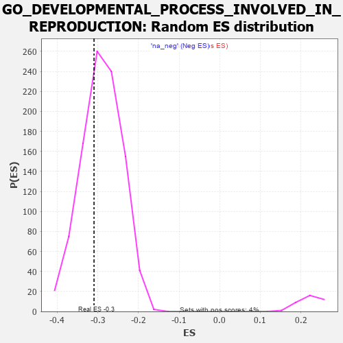

| | | Dataset | 7d |
| Phenotype | NoPhenotypeAvailable |
| Upregulated in class | na_neg |
| GeneSet | GO_DEVELOPMENTAL_PROCESS_INVOLVED_IN_REPRODUCTION |
| Enrichment Score (ES) | -0.30944416 |
| Normalized Enrichment Score (NES) | -1.0631262 |
| Nominal p-value | 0.34511435 |
| FDR q-value | 0.79456276 |
| FWER p-Value | 1.0 |
Table: GSEA Results Summary
 Fig 1: Enrichment plot: GO_DEVELOPMENTAL_PROCESS_INVOLVED_IN_REPRODUCTION
Fig 1: Enrichment plot: GO_DEVELOPMENTAL_PROCESS_INVOLVED_IN_REPRODUCTION
Profile of the Running ES Score & Positions of GeneSet Members on the Rank Ordered List
| PROBE | GENE SYMBOL | GENE_TITLE | RANK IN GENE LIST | RANK METRIC SCORE | RUNNING ES | CORE ENRICHMENT | | 1 | ST14 | | | 7 | 5.713 | 0.0435 | No |
| 2 | H2AX | | | 20 | 4.738 | 0.0787 | No |
| 3 | SPO11 | | | 35 | 3.371 | 0.1031 | No |
| 4 | MAST2 | | | 59 | 2.459 | 0.1192 | No |
| 5 | SP3 | | | 131 | 1.391 | 0.1209 | No |
| 6 | TPPP3 | | | 195 | 1.079 | 0.1212 | No |
| 7 | SMAD5 | | | 231 | 0.979 | 0.1243 | No |
| 8 | CIP2A | | | 246 | 0.945 | 0.1298 | No |
| 9 | WEE2 | | | 333 | 0.766 | 0.1247 | No |
| 10 | ARNT | | | 357 | 0.741 | 0.1275 | No |
| 11 | LARP7 | | | 369 | 0.731 | 0.1318 | No |
| 12 | BAX | | | 387 | 0.711 | 0.1351 | No |
| 13 | MLH1 | | | 423 | 0.679 | 0.1358 | No |
| 14 | ERCC1 | | | 453 | 0.660 | 0.1372 | No |
| 15 | CCNB1 | | | 581 | 0.601 | 0.1256 | No |
| 16 | FBXW8 | | | 601 | 0.594 | 0.1277 | No |
| 17 | AURKC | | | 633 | 0.583 | 0.1283 | No |
| 18 | FST | | | 698 | 0.560 | 0.1244 | No |
| 19 | VASH1 | | | 712 | 0.556 | 0.1270 | No |
| 20 | TDRD9 | | | 761 | 0.542 | 0.1251 | No |
| 21 | TFEB | | | 839 | 0.522 | 0.1192 | No |
| 22 | RNF38 | | | 862 | 0.516 | 0.1204 | No |
| 23 | ASF1B | | | 863 | 0.515 | 0.1244 | No |
| 24 | HMGB2 | | | 892 | 0.507 | 0.1247 | No |
| 25 | NSUN2 | | | 901 | 0.506 | 0.1276 | No |
| 26 | TDRD7 | | | 936 | 0.498 | 0.1271 | No |
| 27 | RNF17 | | | 965 | 0.491 | 0.1273 | No |
| 28 | WDR48 | | | 975 | 0.489 | 0.1300 | No |
| 29 | MEN1 | | | 1003 | 0.483 | 0.1302 | No |
| 30 | REC8 | | | 1028 | 0.478 | 0.1309 | No |
| 31 | AKT1 | | | 1040 | 0.476 | 0.1331 | No |
| 32 | RBM15 | | | 1057 | 0.473 | 0.1347 | No |
| 33 | NDRG3 | | | 1068 | 0.470 | 0.1371 | No |
| 34 | SRC | | | 1128 | 0.459 | 0.1331 | No |
| 35 | SCMH1 | | | 1300 | 0.428 | 0.1144 | No |
| 36 | FKBP6 | | | 1301 | 0.428 | 0.1177 | No |
| 37 | UBR2 | | | 1334 | 0.423 | 0.1169 | No |
| 38 | FKBP4 | | | 1390 | 0.412 | 0.1130 | No |
| 39 | DDX4 | | | 1436 | 0.403 | 0.1103 | No |
| 40 | DACH1 | | | 1471 | 0.395 | 0.1090 | No |
| 41 | INHBB | | | 1514 | 0.388 | 0.1066 | No |
| 42 | TDRD5 | | | 1528 | 0.387 | 0.1080 | No |
| 43 | BOLL | | | 1561 | 0.381 | 0.1068 | No |
| 44 | RXRA | | | 1647 | 0.365 | 0.0987 | No |
| 45 | RTCB | | | 1739 | 0.347 | 0.0897 | No |
| 46 | MSH2 | | | 1819 | 0.334 | 0.0821 | No |
| 47 | SGPL1 | | | 1820 | 0.334 | 0.0847 | No |
| 48 | TDRKH | | | 1836 | 0.331 | 0.0853 | No |
| 49 | GATA4 | | | 1837 | 0.330 | 0.0879 | No |
| 50 | TCF7 | | | 1848 | 0.328 | 0.0892 | No |
| 51 | SMAD4 | | | 1860 | 0.326 | 0.0903 | No |
| 52 | NUP62 | | | 1871 | 0.324 | 0.0915 | No |
| 53 | TAF4 | | | 1899 | 0.321 | 0.0905 | No |
| 54 | DDX6 | | | 1915 | 0.318 | 0.0911 | No |
| 55 | GPX4 | | | 1989 | 0.306 | 0.0841 | No |
| 56 | KDM3A | | | 2078 | 0.294 | 0.0750 | No |
| 57 | BMP7 | | | 2107 | 0.290 | 0.0737 | No |
| 58 | PSME4 | | | 2143 | 0.285 | 0.0714 | No |
| 59 | EAF2 | | | 2278 | 0.263 | 0.0562 | No |
| 60 | LHX9 | | | 2393 | 0.247 | 0.0434 | No |
| 61 | RTF2 | | | 2615 | 0.210 | 0.0166 | No |
| 62 | CSDE1 | | | 2693 | 0.200 | 0.0083 | No |
| 63 | MARF1 | | | 2704 | 0.198 | 0.0085 | No |
| 64 | PHB2 | | | 2712 | 0.197 | 0.0091 | No |
| 65 | SLIT2 | | | 2724 | 0.195 | 0.0092 | No |
| 66 | TTLL1 | | | 2764 | 0.189 | 0.0057 | No |
| 67 | FGFR2 | | | 2895 | 0.167 | -0.0097 | No |
| 68 | ACVR1 | | | 2932 | 0.161 | -0.0131 | No |
| 69 | AZIN2 | | | 2993 | 0.150 | -0.0197 | No |
| 70 | WNT4 | | | 3023 | 0.146 | -0.0223 | No |
| 71 | BRCA2 | | | 3024 | 0.146 | -0.0212 | No |
| 72 | BRDT | | | 3028 | 0.145 | -0.0204 | No |
| 73 | LEF1 | | | 3037 | 0.144 | -0.0203 | No |
| 74 | BIRC6 | | | 3047 | 0.143 | -0.0204 | No |
| 75 | LHX3 | | | 3092 | 0.138 | -0.0250 | No |
| 76 | PRDX4 | | | 3214 | 0.120 | -0.0396 | No |
| 77 | ASZ1 | | | 3299 | 0.106 | -0.0496 | No |
| 78 | TDRD1 | | | 3321 | 0.101 | -0.0515 | No |
| 79 | GAS2 | | | 3392 | 0.090 | -0.0598 | No |
| 80 | TUT4 | | | 3394 | 0.090 | -0.0592 | No |
| 81 | TESK2 | | | 3401 | 0.089 | -0.0593 | No |
| 82 | MED1 | | | 3405 | 0.089 | -0.0590 | No |
| 83 | GLI1 | | | 3489 | 0.079 | -0.0691 | No |
| 84 | TBP | | | 3493 | 0.078 | -0.0689 | No |
| 85 | DMRT1 | | | 3546 | 0.068 | -0.0750 | No |
| 86 | MAPK3 | | | 3589 | 0.062 | -0.0799 | No |
| 87 | CBL | | | 3621 | 0.056 | -0.0835 | No |
| 88 | HSF1 | | | 3718 | 0.039 | -0.0955 | No |
| 89 | NIPBL | | | 3900 | 0.010 | -0.1188 | No |
| 90 | JAG2 | | | 3903 | 0.010 | -0.1189 | No |
| 91 | SFRP2 | | | 4065 | -0.018 | -0.1395 | No |
| 92 | ROBO2 | | | 4066 | -0.018 | -0.1394 | No |
| 93 | CSF1 | | | 4074 | -0.019 | -0.1401 | No |
| 94 | DDX20 | | | 4083 | -0.021 | -0.1410 | No |
| 95 | WNT2 | | | 4084 | -0.021 | -0.1408 | No |
| 96 | MTOR | | | 4114 | -0.025 | -0.1444 | No |
| 97 | HNF4A | | | 4157 | -0.034 | -0.1495 | No |
| 98 | MSH4 | | | 4176 | -0.038 | -0.1515 | No |
| 99 | GGT7 | | | 4200 | -0.041 | -0.1542 | No |
| 100 | TAF7L | | | 4205 | -0.042 | -0.1544 | No |
| 101 | PAX5 | | | 4255 | -0.051 | -0.1603 | No |
| 102 | HERC2 | | | 4302 | -0.060 | -0.1657 | No |
| 103 | SETD2 | | | 4443 | -0.084 | -0.1831 | No |
| 104 | LRRK2 | | | 4467 | -0.087 | -0.1854 | No |
| 105 | BAG6 | | | 4563 | -0.108 | -0.1968 | No |
| 106 | GATA3 | | | 4614 | -0.120 | -0.2023 | No |
| 107 | POC1A | | | 4768 | -0.151 | -0.2208 | No |
| 108 | PLD6 | | | 4799 | -0.157 | -0.2234 | No |
| 109 | TPPP2 | | | 4800 | -0.157 | -0.2222 | No |
| 110 | DLG1 | | | 4860 | -0.169 | -0.2285 | No |
| 111 | SLIT3 | | | 4890 | -0.175 | -0.2308 | No |
| 112 | ATRX | | | 4929 | -0.184 | -0.2343 | No |
| 113 | FZD4 | | | 4940 | -0.186 | -0.2341 | No |
| 114 | PRKDC | | | 4955 | -0.189 | -0.2345 | No |
| 115 | OSBP2 | | | 4978 | -0.193 | -0.2358 | No |
| 116 | ASH1L | | | 5203 | -0.248 | -0.2627 | No |
| 117 | ATM | | | 5210 | -0.249 | -0.2615 | No |
| 118 | TMF1 | | | 5225 | -0.251 | -0.2614 | No |
| 119 | PTEN | | | 5262 | -0.261 | -0.2640 | No |
| 120 | CELF4 | | | 5275 | -0.266 | -0.2635 | No |
| 121 | TCF21 | | | 5340 | -0.283 | -0.2695 | No |
| 122 | FZD5 | | | 5386 | -0.292 | -0.2730 | No |
| 123 | PRDX3 | | | 5389 | -0.293 | -0.2710 | No |
| 124 | PLK4 | | | 5397 | -0.295 | -0.2696 | No |
| 125 | SOX8 | | | 5404 | -0.296 | -0.2681 | No |
| 126 | VDR | | | 5517 | -0.325 | -0.2800 | No |
| 127 | ROR2 | | | 5626 | -0.353 | -0.2912 | No |
| 128 | ASPM | | | 5637 | -0.358 | -0.2897 | No |
| 129 | CASP8 | | | 5678 | -0.369 | -0.2919 | No |
| 130 | ADA | | | 5798 | -0.405 | -0.3041 | No |
| 131 | BBS4 | | | 5806 | -0.407 | -0.3019 | No |
| 132 | MEIG1 | | | 5866 | -0.423 | -0.3062 | Yes |
| 133 | CDK16 | | | 5869 | -0.425 | -0.3031 | Yes |
| 134 | RAB13 | | | 5870 | -0.425 | -0.2998 | Yes |
| 135 | STK11 | | | 5922 | -0.443 | -0.3029 | Yes |
| 136 | AGFG1 | | | 5955 | -0.457 | -0.3035 | Yes |
| 137 | PRDM1 | | | 5956 | -0.457 | -0.3000 | Yes |
| 138 | MORN2 | | | 5981 | -0.465 | -0.2994 | Yes |
| 139 | TUT7 | | | 5997 | -0.471 | -0.2977 | Yes |
| 140 | PTPRN | | | 6007 | -0.474 | -0.2952 | Yes |
| 141 | USP9Y | | | 6075 | -0.498 | -0.2999 | Yes |
| 142 | CALR | | | 6077 | -0.499 | -0.2962 | Yes |
| 143 | UBB | | | 6090 | -0.503 | -0.2938 | Yes |
| 144 | STK4 | | | 6145 | -0.518 | -0.2968 | Yes |
| 145 | RNF8 | | | 6147 | -0.518 | -0.2929 | Yes |
| 146 | GOPC | | | 6167 | -0.528 | -0.2912 | Yes |
| 147 | INSR | | | 6204 | -0.538 | -0.2917 | Yes |
| 148 | RGN | | | 6233 | -0.547 | -0.2910 | Yes |
| 149 | IFT27 | | | 6348 | -0.596 | -0.3011 | Yes |
| 150 | ARMC2 | | | 6363 | -0.602 | -0.2982 | Yes |
| 151 | BIRC3 | | | 6366 | -0.603 | -0.2938 | Yes |
| 152 | BBS2 | | | 6383 | -0.608 | -0.2911 | Yes |
| 153 | HERC4 | | | 6429 | -0.631 | -0.2920 | Yes |
| 154 | CELF3 | | | 6475 | -0.651 | -0.2927 | Yes |
| 155 | ACE | | | 6526 | -0.674 | -0.2939 | Yes |
| 156 | M1AP | | | 6537 | -0.680 | -0.2899 | Yes |
| 157 | MYCBP | | | 6566 | -0.693 | -0.2882 | Yes |
| 158 | TMED2 | | | 6665 | -0.746 | -0.2950 | Yes |
| 159 | VASH2 | | | 6680 | -0.752 | -0.2909 | Yes |
| 160 | EGFR | | | 6708 | -0.765 | -0.2885 | Yes |
| 161 | DMRT2 | | | 6718 | -0.768 | -0.2837 | Yes |
| 162 | CDKL2 | | | 6795 | -0.811 | -0.2871 | Yes |
| 163 | WDR19 | | | 6796 | -0.812 | -0.2808 | Yes |
| 164 | TBPL1 | | | 6798 | -0.814 | -0.2746 | Yes |
| 165 | HEXB | | | 6894 | -0.864 | -0.2802 | Yes |
| 166 | GHSR | | | 6937 | -0.894 | -0.2786 | Yes |
| 167 | PACRG | | | 7007 | -0.940 | -0.2802 | Yes |
| 168 | DZIP1 | | | 7009 | -0.940 | -0.2730 | Yes |
| 169 | CFTR | | | 7143 | -1.030 | -0.2821 | Yes |
| 170 | AR | | | 7169 | -1.046 | -0.2772 | Yes |
| 171 | OVOL2 | | | 7197 | -1.068 | -0.2724 | Yes |
| 172 | CETN2 | | | 7200 | -1.070 | -0.2644 | Yes |
| 173 | LRGUK | | | 7229 | -1.101 | -0.2594 | Yes |
| 174 | RSPH1 | | | 7231 | -1.101 | -0.2510 | Yes |
| 175 | QKI | | | 7272 | -1.145 | -0.2473 | Yes |
| 176 | IFT81 | | | 7277 | -1.151 | -0.2388 | Yes |
| 177 | CIB1 | | | 7280 | -1.152 | -0.2301 | Yes |
| 178 | SYCP1 | | | 7295 | -1.167 | -0.2229 | Yes |
| 179 | SPAG8 | | | 7337 | -1.211 | -0.2188 | Yes |
| 180 | OVOL1 | | | 7341 | -1.214 | -0.2097 | Yes |
| 181 | SPEF2 | | | 7418 | -1.289 | -0.2095 | Yes |
| 182 | SPAG6 | | | 7426 | -1.302 | -0.2003 | Yes |
| 183 | LHX1 | | | 7431 | -1.305 | -0.1907 | Yes |
| 184 | MMP19 | | | 7433 | -1.309 | -0.1806 | Yes |
| 185 | CASP2 | | | 7442 | -1.322 | -0.1714 | Yes |
| 186 | GGT1 | | | 7447 | -1.329 | -0.1616 | Yes |
| 187 | RAI14 | | | 7450 | -1.337 | -0.1514 | Yes |
| 188 | XRN2 | | | 7488 | -1.384 | -0.1455 | Yes |
| 189 | IQCG | | | 7541 | -1.455 | -0.1409 | Yes |
| 190 | TTPA | | | 7575 | -1.516 | -0.1333 | Yes |
| 191 | PKD1 | | | 7628 | -1.611 | -0.1275 | Yes |
| 192 | MNS1 | | | 7642 | -1.633 | -0.1165 | Yes |
| 193 | CNBD2 | | | 7663 | -1.670 | -0.1061 | Yes |
| 194 | BOK | | | 7715 | -1.817 | -0.0986 | Yes |
| 195 | PANK2 | | | 7736 | -1.866 | -0.0866 | Yes |
| 196 | CASP3 | | | 7747 | -1.902 | -0.0732 | Yes |
| 197 | SYNE1 | | | 7782 | -2.011 | -0.0619 | Yes |
| 198 | NPHP1 | | | 7791 | -2.041 | -0.0471 | Yes |
| 199 | PKD2 | | | 7822 | -2.167 | -0.0341 | Yes |
| 200 | ARRB1 | | | 7935 | -3.377 | -0.0223 | Yes |
| 201 | WDR33 | | | 7939 | -3.452 | 0.0041 | Yes |
Table: GSEA details [plain text format]

Fig 2: GO_DEVELOPMENTAL_PROCESS_INVOLVED_IN_REPRODUCTION: Random ES distribution
Gene set null distribution of ES for GO_DEVELOPMENTAL_PROCESS_INVOLVED_IN_REPRODUCTION